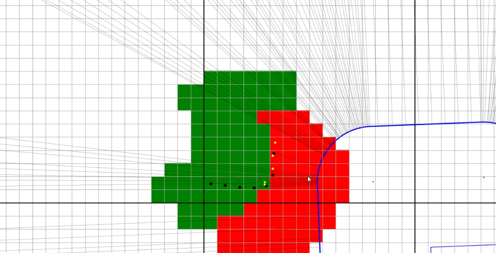
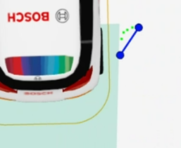
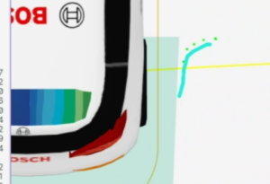
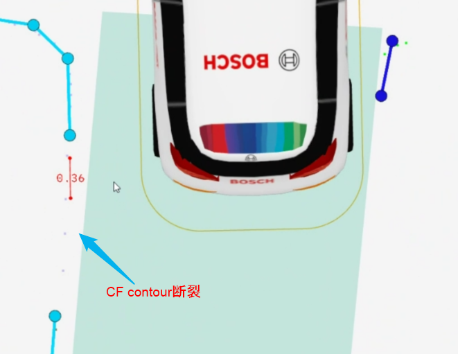
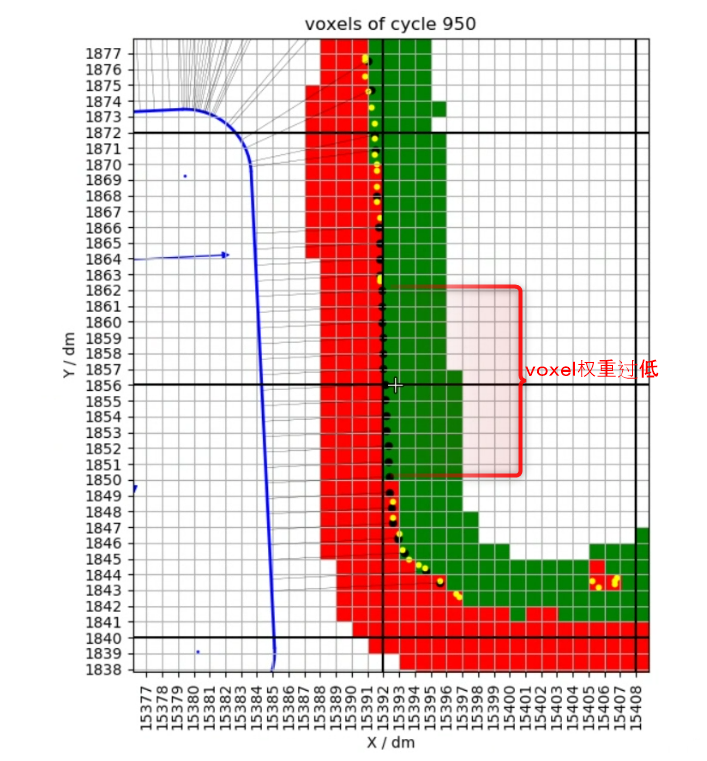

CF's adaptation for Viper BEV-FS
VIPER BEV-FS adaptation plan:
stage-1 7/15
Ray-Cast changed from orthogonal projection to perspective projection
The densely intensive weight weight (Weight) value is extremely low.
Optimize Polydp to cause too smooth outline
Optimize Viper-FS CONTOR Fracture problem
In the Viper-only mode, the Guidance phase, test closing the Space-Carving function
stage-2 DD: TBD
Optimize TSDF MAPPING Strategy
Optimize attenuation strategy
Try to close the blocking KEEP function
7/10 viper-only test, CF problem finishing
The angle of orthogonal Raycast will cause one side of the L shaped.
- 
Polydp will cause L -type to be sampled as a line segment.The current threshold is 10cm (tuning)
The result of polydp
- 
Turn off the results of polydp
- 
The point of VIPER is sparse, exceeding 30cm, CF will not connect and interpolate the interval point, and the isolated point will not generate Contour
- 
The dense points should be generated, but the Weight value is very low.(Need to check the cause)
- 